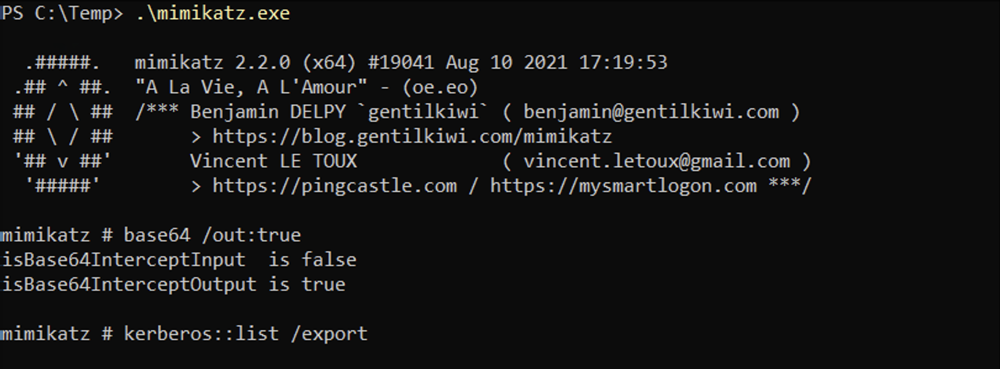
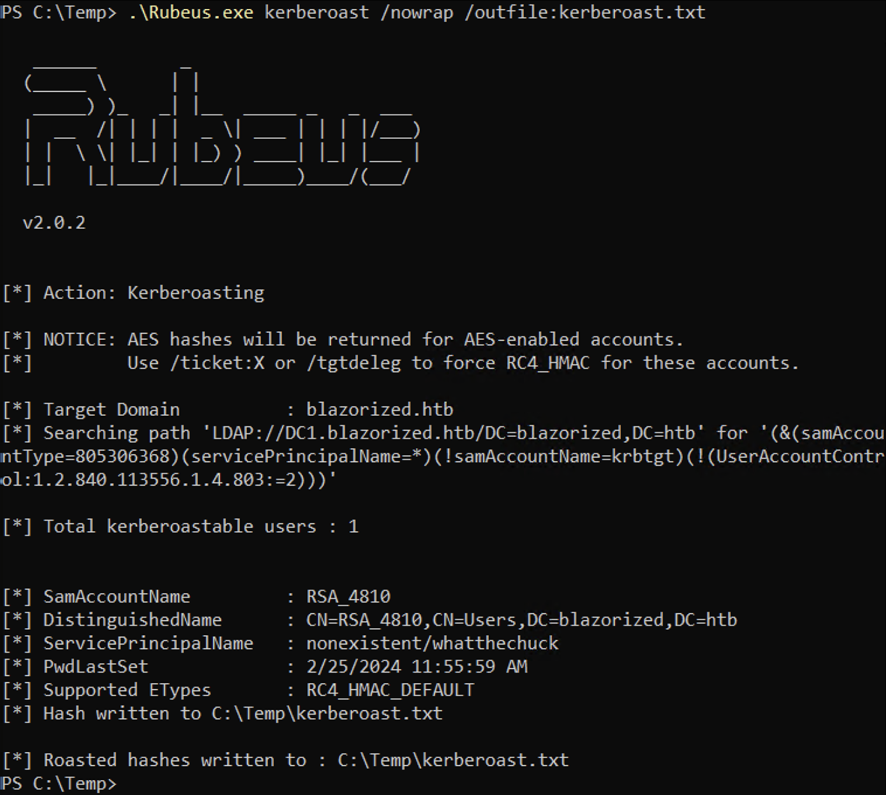

April 20, 2025
Kerberoasting from Linux and Windows
In this tutorial we will see how to perform an Kerberoasting attack using Linux and Windows. We will first use Impacket's GetUserSPNs.py on Linux and then use setspn.exe, Mimikatz, PowerView and Rubeus on Windows to dump the hashes. And lastly, we will see how to crack those hashes using hashcat.
Kerberoasting is a powerful post-exploitation technique that targets service accounts in Active Directory environments by taking advantage of weaknesses in the Kerberos authentication protocol. Once an attacker gains a foothold on a domain-joined machine—typically as a low-privileged user—they can request Ticket Granting Service (TGS) tickets for any service running under a domain account that has a Service Principal Name (SPN) registered. These tickets are encrypted with the service account's NTLM hash. Since the attacker receives a copy of the ticket, they can extract it and attempt to crack the hash offline, without fear of triggering account lockouts or raising alarms on the domain.
What makes Kerberoasting particularly dangerous is that it relies entirely on legitimate features of the Kerberos protocol, making detection and prevention challenging in poorly monitored environments. Many service accounts use weak or rarely rotated passwords, which makes them ideal targets for offline brute-force or dictionary attacks. Once an attacker successfully cracks the hash, they gain access to the plaintext credentials of the service account—often revealing elevated privileges or even domain admin access. This technique highlights the critical need for organizations to implement strong password policies, monitor ticket requests, and regularly audit SPN accounts to mitigate the risk of privilege escalation through Kerberoasting.
We can use the GetUserSPNs.py script from impacket to check for kerberoastable users. The -dc-ip option will take the IP address of the domain controller. The domain name is "search.htb" and we are enumerating using the "hope.sharp" user. It was able to find an account by the name of "web_svc" with a SPN of: RESEARCH/web_svc.search.htb:60001.
The -request option requests the TGS Ticket or the Service Ticket.
We can save the TGS Ticket or the Service Ticket to a file using the -outputfile option.
It shows the ticket.
Now let's crack the ticket using hashcat. We can see that it was able to find the password.
It's time to find a kerberoastable user using Windows. The setspn.exe command enables us to read, modify, and delete SPNs. We were able to enumerate some SPNs below.
We can use mimikatz on Windows to dump the Kerberos tickets. In here, we can see three tickets available to us. Without using the base64 /out:true, it will extract the tickets and write them to ".kirbi" files.
Let's see how to find kerberoastable users using PowerView. But first, we have to import the module.

The Get-DomainUser cmdlet with the -SPN flag finds all the kerberoastable users. We can see that it was able to find a SPN called kadmin/changepw and another one called nonexistent/whatthechuck.
It shows the corresponding SAM account names for the two SPNs found.
When we pass the SPNs to the Get-DomainSPNTicket cmdlet, it shows us the hashes for the SPNs which we can crack with hashcat.
The Export-Csv cmdlet saves the hashes to a CSV formatted file.
Let's look at another way of retrieving the SPN hashes. But first, we have to import the PowerView module.
After importing the required module, we can run Invoke-Kerberoast to retrieve SPN hashes.
Rubeus.exe can also be used to retrieve SPN hashes. We have to pass the kerberoast option to it. And we can also use /nowrap to simplify the copy and paste process because it will prevent the hash from being column wrapped.
We can save the SPN hash to a file as well by using the /outfile option.
Let's look at another scenario. Let's say that you have identified two SPNs but when trying to dump the hashes, it only shows the hash for one SPN.
We can see that the hash for "RSA_4810" is missing.
We can use PowerShell to make TGS ticket request for an account.
Once the TGS ticket has been received, we can dump the hashes.

If you have more than one user that you would like to request TGS tickets for, then you can pass the output from the setspn.exe command to retrieve the TGS tickets for all the users identified.
If you liked reading this article, you can follow me on Twitter: 0xmaCyberSec.